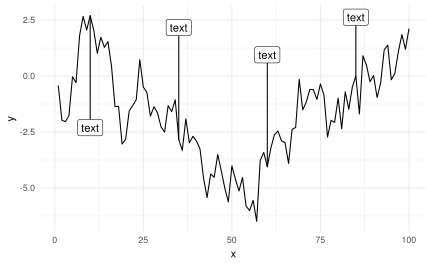

第 8 章 高级图形
- Claus O. Wilke 新书：数据可视化基础 Fundamentals of Data Visualization 全 R/ggplot2 实现
ggplot2 有很多绘图函数
library(ggplot2)
# packageDescription("ggplot2")
grep('^(geom_)', ls('package:ggplot2'), value = TRUE)
#> [1] "geom_abline" "geom_area" "geom_bar"
#> [4] "geom_bin2d" "geom_blank" "geom_boxplot"
#> [7] "geom_col" "geom_contour" "geom_count"
#> [10] "geom_crossbar" "geom_curve" "geom_density"
#> [13] "geom_density_2d" "geom_density2d" "geom_dotplot"
#> [16] "geom_errorbar" "geom_errorbarh" "geom_freqpoly"
#> [19] "geom_hex" "geom_histogram" "geom_hline"
#> [22] "geom_jitter" "geom_label" "geom_line"
#> [25] "geom_linerange" "geom_map" "geom_path"
#> [28] "geom_point" "geom_pointrange" "geom_polygon"
#> [31] "geom_qq" "geom_qq_line" "geom_quantile"
#> [34] "geom_raster" "geom_rect" "geom_ribbon"
#> [37] "geom_rug" "geom_segment" "geom_sf"
#> [40] "geom_smooth" "geom_spoke" "geom_step"
#> [43] "geom_text" "geom_tile" "geom_violin"
#> [46] "geom_vline"
grep('^(stat_)', ls('package:ggplot2'), value = TRUE)
#> [1] "stat_bin" "stat_bin_2d" "stat_bin_hex"
#> [4] "stat_bin2d" "stat_binhex" "stat_boxplot"
#> [7] "stat_contour" "stat_count" "stat_density"
#> [10] "stat_density_2d" "stat_density2d" "stat_ecdf"
#> [13] "stat_ellipse" "stat_function" "stat_identity"
#> [16] "stat_qq" "stat_qq_line" "stat_quantile"
#> [19] "stat_sf" "stat_smooth" "stat_spoke"
#> [22] "stat_sum" "stat_summary" "stat_summary_2d"
#> [25] "stat_summary_bin" "stat_summary_hex" "stat_summary2d"
#> [28] "stat_unique" "stat_ydensity"rattle 下载量时序图
library(cranlogs)
library(ggthemes)
pkgs_down <- cran_downloads(package = "rattle", from = Sys.Date() - 365 * 5, to = Sys.Date())
ggplot(pkgs_down, aes(x = date, y = count, colour = package)) +
geom_line() +
geom_point(size = 1.5) +
scale_x_date(date_breaks = "1 year", date_labels = "%Y") +
ylim(c(0, 1500)) +
scale_colour_brewer(palette = "Set1") +
# scale_color_fivethirtyeight("") +
# theme_fivethirtyeight() +
labs(
subtitle = paste("最近更新日期:", Sys.Date()),
title = "Rattle 最近5年每日下载量",
caption = " 数据源: http://cran-logs.rstudio.com/ "
) +
theme_minimal(base_size = 10.54, base_family = "source-han-serif-cn")
给线条添加注释和标签，这个功能有时候比图例更加漂亮
# 出自 https://gist.github.com/EmilHvitfeldt/acb849a6135a21426c260850cf0f461b
# Horizontal annotations with ggrepel and ggplot2
library(tidyverse)
#> ── Attaching packages ────────────────────────────────── tidyverse 1.2.1 ──
#> ✔ tibble 1.4.2 ✔ purrr 0.2.4
#> ✔ tidyr 0.8.0 ✔ dplyr 0.7.4
#> ✔ readr 1.1.1 ✔ stringr 1.3.1
#> ✔ tibble 1.4.2 ✔ forcats 0.3.0
#> ── Conflicts ───────────────────────────────────── tidyverse_conflicts() ──
#> ✖ dplyr::filter() masks stats::filter()
#> ✖ dplyr::lag() masks stats::lag()
#> ✖ dplyr::vars() masks ggplot2::vars()
library(ggrepel)
data <- tibble(
x = seq_len(100),
y = cumsum(rnorm(100))
)
anno_data <- data %>%
filter(x %% 25 == 10) %>%
mutate(text = "text")
data %>%
ggplot(aes(x, y)) +
geom_line() +
geom_label_repel(aes(label = text),
data = anno_data,
direction = "y",
nudge_y = c(-5, 5, 5, 5)
) +
theme_minimal()

图 8.1: 添加标签
本节软件信息
devtools::session_info("ggplot2")
#> Session info -------------------------------------------------------------
#> setting value
#> version R version 3.4.4 (2017-01-27)
#> system x86_64, linux-gnu
#> ui X11
#> language (EN)
#> collate en_US.UTF-8
#> tz UTC
#> date 2018-05-15
#> Packages -----------------------------------------------------------------
#> package * version date source
#> assertthat 0.2.0 2017-04-11 CRAN (R 3.3.3)
#> cli 1.0.0 2017-11-05 CRAN (R 3.4.2)
#> colorspace 1.3-2 2016-12-14 CRAN (R 3.4.0)
#> crayon 1.3.4 2017-09-16 CRAN (R 3.4.1)
#> dichromat 2.0-0 2013-01-24 CRAN (R 3.0.1)
#> digest 0.6.15 2018-01-28 CRAN (R 3.4.3)
#> ggplot2 * 2.2.1.9000 2018-05-15 Github (tidyverse/ggplot2@daba7ab)
#> glue 1.2.0 2017-10-29 CRAN (R 3.4.2)
#> graphics * 3.4.4 2018-03-15 local
#> grDevices * 3.4.4 2018-03-15 local
#> grid 3.4.4 2018-03-15 local
#> gtable 0.2.0 2016-02-26 CRAN (R 3.2.3)
#> labeling 0.3 2014-08-23 CRAN (R 3.1.1)
#> lattice 0.20-35 2017-03-25 CRAN (R 3.4.4)
#> lazyeval 0.2.1 2017-10-29 CRAN (R 3.4.2)
#> magrittr 1.5 2014-11-22 CRAN (R 3.1.2)
#> MASS 7.3-49 2018-02-23 CRAN (R 3.4.4)
#> Matrix 1.2-12 2017-11-30 CRAN (R 3.4.4)
#> methods * 3.4.4 2018-03-15 local
#> mgcv 1.8-23 2018-01-21 CRAN (R 3.4.4)
#> munsell 0.4.3 2016-02-13 CRAN (R 3.2.3)
#> nlme 3.1-131.1 2018-02-16 CRAN (R 3.4.4)
#> pillar 1.2.2 2018-04-26 CRAN (R 3.4.4)
#> plyr 1.8.4 2016-06-08 CRAN (R 3.4.0)
#> R6 2.2.2 2017-06-17 CRAN (R 3.4.0)
#> RColorBrewer 1.1-2 2014-12-07 CRAN (R 3.1.2)
#> Rcpp 0.12.16 2018-03-13 CRAN (R 3.4.4)
#> reshape2 1.4.3 2017-12-11 CRAN (R 3.4.3)
#> rlang 0.2.0 2018-02-20 CRAN (R 3.4.3)
#> scales 0.5.0 2017-08-24 CRAN (R 3.4.1)
#> stats * 3.4.4 2018-03-15 local
#> stringi 1.2.2 2018-05-02 CRAN (R 3.4.4)
#> stringr * 1.3.1 2018-05-10 CRAN (R 3.4.4)
#> tibble * 1.4.2 2018-01-22 CRAN (R 3.4.3)
#> tools 3.4.4 2018-03-15 local
#> utf8 1.1.3 2018-01-03 CRAN (R 3.4.3)
#> utils * 3.4.4 2018-03-15 local
#> viridisLite 0.3.0 2018-02-01 CRAN (R 3.4.3)
#> withr 2.1.2 2018-03-15 CRAN (R 3.4.4)